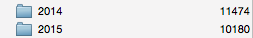
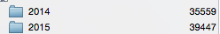

How I Handle Email
| These are a couple of folders in my personal mail account: |  |
| and these are a couple of folders in my work account: |  |
That comes to about 120 messages a day, every day of the week, and those are just the ones I bothered to archive. Here's how I manage it:
-
Always do an hour's work in the morning before checking email at all.
-
Don't leave email running in the background: turn it on, do a sweep (below), then turn it off. If you want to send an email in the middle of some other task, leave yourself a note in a text file for batch processing later.
-
When you do turn mail on, do one quick pass to archive and delete things that don't require replies. You'll be surprised how many threads take care of themselves, or how many things other people will answer, or how far the discussion will get without you intervening.
-
Once you've done that pass, go back and do all your composing in a batch, because then you'll know which things really need replies right now and which can be left. (If you've made notes to yourself while doing other work about email that needs processing, now's the time to turn them into messages - again, you'll be surprised how many messages don't need to be sent once you see what the rest of the world has already said.)
-
"But people might need to get hold of me right away for emergencies!" OK, then give those people your cell # and ask them to text you (or call, if they're my age and still regard texting suspiciously).
-
Don't be afraid to let important-but-not-urgent email pile up, but allocate an afternoon each week for clearing it. Again, do this offline–give yourself space to think medium-sized joined-up thoughts.